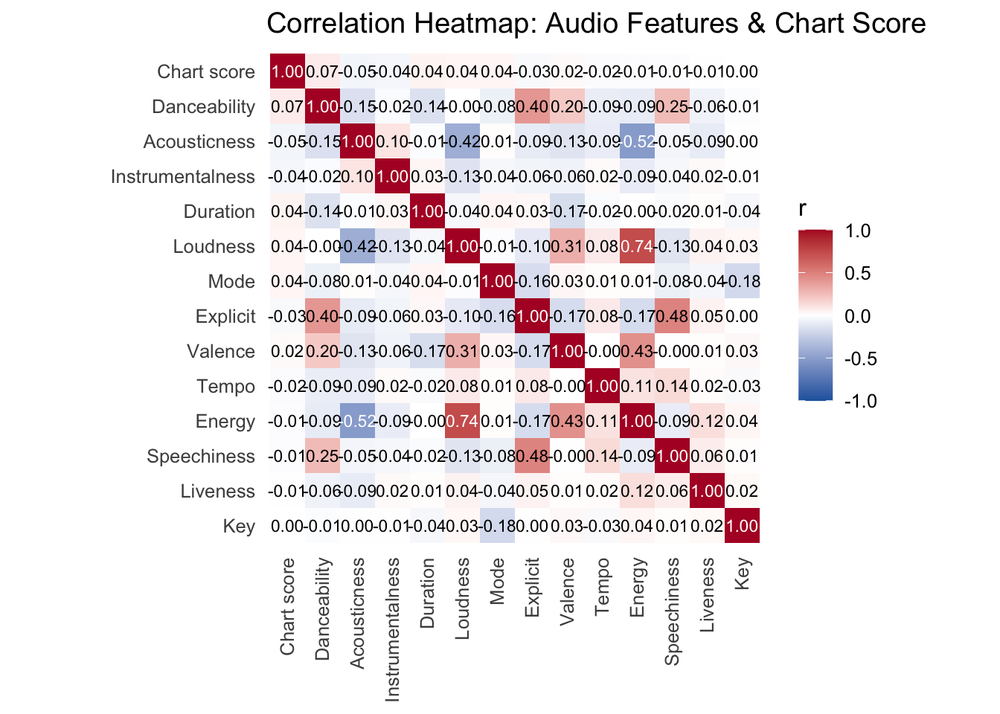
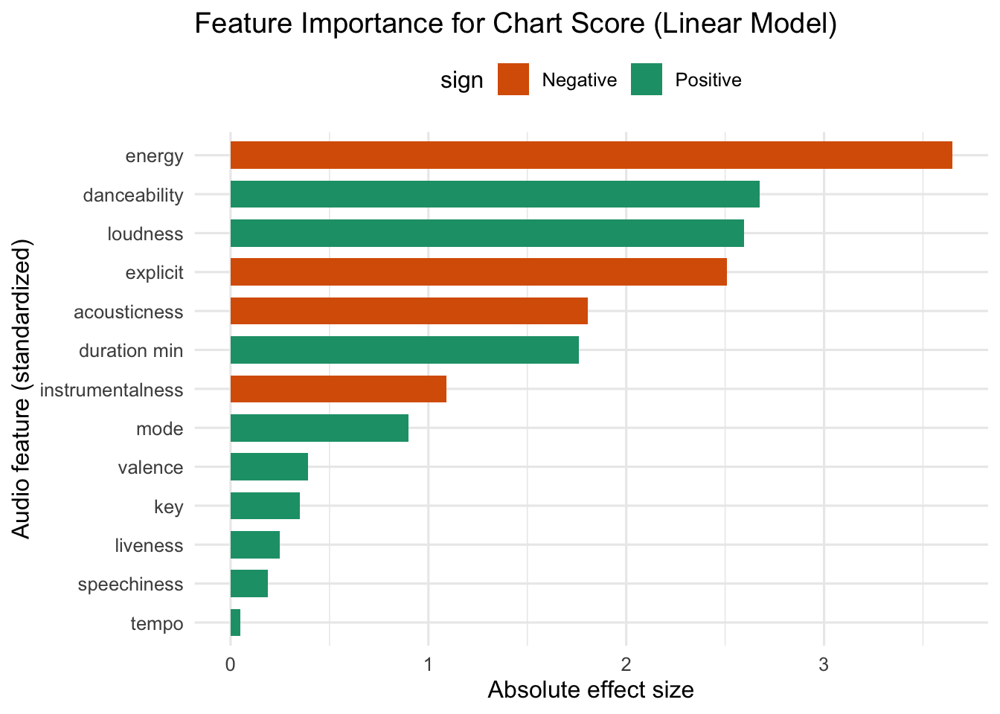

What Aspects of a Song’s Quality Best Impact its Billboard Charting Success
Author
adesina923
Introduction
Music has been said to pull at the heartstrings of the world. There are very few media that can connect people from different cultures, languages, and regions like music. The music industry, primarily in the United States, has changed dramatically due to the onset of streaming and the proliferation of multiple streaming platforms.
The Billboard Hot 100 has been widely regarded as one of the most important indicators of commercial success in popular music, as it captures which songs truly break through to mainstream audiences. Traditionally, chart performance reflected a combination of physical sales, radio airplay, and later, digital downloads, offering a snapshot of what the public was listening to at any given moment.
The rise of streaming has fundamentally reshaped this landscape. Platforms like Spotify and Apple Music have not only changed how listeners access music, but have also altered how success is measured. Streams, playlists, and algorithm-driven recommendations now play a key role in determining which songs climb the charts. As a result, the Billboard Hot 100 today reflects a complex but interesting dynamic between listener behavior, platform dynamics, and the intrinsic qualities of a song.
In this project, I aim to explore the latter and determine what aspects of a song’s musical profile are most strongly associated with its Billboard charting performance. Using Spotify song quality data that captures audio characteristics such as tempo, danceability, and energy, I analyze which features of a track are most predictive of its charting success. Ultimately, the goal is to better understand how the qualities of the music itself relate to commercial performance in the modern, streaming-dominated music industry.
For this analysis I used two publicly available datasets.
Spotify Songs Analytics Dataset
Code
if(!dir.exists(file.path("data", "group_project"))){dir.create(file.path("data", "group_project"), showWarnings=FALSE, recursive=TRUE)}Spotify_song_analytics_FILENAME <-file.path("data", "group_project", "Spotify song analytics dataset.csv")if(!file.exists(Spotify_song_analytics_FILENAME)){download.file('https://raw.githubusercontent.com/gabminamedez/spotify-data/refs/heads/master/data.csv', destfile=Spotify_song_analytics_FILENAME)}# Read the Spotify datasp_raw <-read_csv(Spotify_song_analytics_FILENAME) |> janitor::clean_names()# preview last 5 rows sp_raw_sneak_peak <- sp_raw |>arrange(desc(year)) |>select(-id) |>slice(1:5) |>datatable(caption ="Raw Spotify Songs Analytics Dataset - Last 5 Rows",options =list(searching =FALSE, info =FALSE, pageLength =5))
This dataset, posted by GitHub user gabminamedez, contains over 160K tracks from 1921-2020 found on Spotify as of June 2020. Each row corresponds to a single track, and contains basic information like the name, and duration of a track, the artists on it, and the year of release. What makes this dataset special, though, are the audio features it includes, most of which have been curated* by Spotify’s API.
acousticness*: A confidence measure from 0.0 to 1.0 of whether the track is acoustic.
danceability*: Describes how suitable a track is for dancing. A value of 0.0 is least danceable and 1.0 is most danceable.
energy*: Energy is a measure from 0.0 to 1.0 and represents a perceptual measure of intensity and activity. Typically, energetic tracks feel fast and loud.
instrumentalness*: Predicts whether a track contains no vocals.
liveness*: Detects the presence of an audience in the recording.
loudness*: The overall loudness of a track in decibels (dB).
speechiness*: Detects the presence of spoken words in a track.
tempo*: The overall estimated tempo of a track in beats per minute (BPM).
valence*: A measure from 0.0 to 1.0 describing the musical positiveness conveyed by a track.
mode: Melodic content from the modality of a track. 1 = Major; 0 = Minor.
key: The estimated overall key of a track from the Pitch Class notation. E.g. 0 = C, 1 = C♯/D♭, 2 = D, and so on.
popularity: A track’s popularity, 0-100 where 100 is the most popular based on Spotify’s algorithm.
explicit: Whether or not the track has explicit lyrics. 1 = True; 0 = False.
Here is a preview of the last 5 rows in this dataset, before any cleaning or manipulation.
Billboard Hot 100 Dataset
Code
if(!dir.exists(file.path("data", "group_project"))){dir.create(file.path("data", "group_project"), showWarnings=FALSE, recursive=TRUE)}Hot_100_FILENAME <-file.path("data", "group_project", "Hot 100.csv")if(!file.exists(Hot_100_FILENAME)){download.file("https://raw.githubusercontent.com/HipsterVizNinja/random-data/refs/heads/main/Music/hot-100/Hot%20100.csv", destfile=Hot_100_FILENAME)}# Read the Billboard databb_raw <-read_csv(Hot_100_FILENAME) |> janitor::clean_names()# preview 1st 2015 Chartbb_raw_sneak_peak <- bb_raw |>filter(chart_date =='2015-01-03') |>select(-chart_url) |>arrange(chart_position) |>datatable(caption ="Raw Billboard Hot 100 Chart - January 3rd 2015",options =list(searching =FALSE, info =FALSE, pageLength =10))
This dataset, posted by GitHub user HipsterVizNinja, is a complete historical record of every Billboard Hot 100 chart, from 1958 to August 2025. Unlike our Spotify dataset, each row does not correspond to a single track, since a song can have many entries on the charts. The columns of this dataset are defined as follows:
chart_position: The position of the song for the given chart date.
chart_date: The date that the chart was released.
song: The name of the song.
performer: The performer of the song.
song_id: A concatenation of song and performer to create a unique identifier.
instance: Counts how many times a song_id has returned to the chart after more than 1 week off the chart.
time_on_chart: Running count of weeks (all-time) a song_id has been on the chart.
consecutive_weeks: For the given instance, how many weeks the song_id has been on the chart consecutively; NULL indicates the start of a new instance.
previous_week: For the given instance, the chart_position for the previous week.
peak_position: The all-time best/peak position for a song_id.
worst_position: The all-time worst/lowest position for a song_id.
chart_debut: The date of the first initial instance for a song_id.
chart_url: URL to the chart on Billboard.com.
Here is a preview of the full chart from the first week of January 2015, before any cleaning or manipulation
At this point, we have downloaded our two datasets from which we will conduct analysis. From our Spotify Songs Analytics Dataset, we have popular songs from 1921-2020, with associated audio features for them all. Our Billboard Hot 100 dataset presents us with a trustworthy, historical record of charting information, and with charts going as far back as 1958, we have more than enough coverage to take our analysis in any which way we please.
Data Cleaning
In order to suitably join the two datasets together and begin answering our core question of what audio features best impact a song’s charting success, data cleaning is required.
I opted to only look at the charts from 2015-2019. This time period is representative of the music streaming-era boom, when the industry was transformed from physical/download sales to a subscription-based model dominated by services like Spotify, which hit 100 million paid subscribers in 2019. Looking at songs that charted in this time period ensured that I had a good sample to construct my analysis from.
Code
# choose the 2015 - 2019 window for the billboard datayr_min <-2015; yr_max <-2019bb_win <- bb_raw |>mutate(chart_date =ymd(chart_date)) |># parse to Datefilter(chart_date >=as.Date(paste0(yr_min, "-01-01")), chart_date <=as.Date(paste0(yr_max, "-12-31")))
Since my goal was to join the Billboard data from 2015-2019 to the Spotify Songs Analytics Dataset, a large part of my cleaning centered around creating a suitable join key. After inspecting both datasets, I decided that I would join the two datasets using a concatenated song title and primary song artist key. To do this, I had to extract the primary artist for each song of both the Spotify and Billboard datasets, and clean the song titles in both datasets to make sure that there would be a clean, one-to-one join.
Billboard’s ‘performer’ field often includes featured artists, nicknames in quotes, and collaboration separators (e.g., “feat.”, “x”, “+”). My primary_artist_billboard() function solves this problem, standardizing ‘performer’ to a single, canonical primary artist before forming the key.
Code
# Purpose: Extract the *primary* artist from Billboard's 'performer' field# for your 2015–2019 window. Rules:# - Remove quoted nicknames entirely (e.g., Missy "Misdemeanor" Elliott → missy elliott).# - Cut anything after collab keywords: featuring/feat/ft/with.# - Cut at the first '&' (primary artist appears before it).# - For commas, *preserve stylistic monikers* like "Tyler, The Creator";# otherwise cut at the first comma.# - Cut after ' x ' / ' + ' only when the separator is followed by a letter# (true collab separator). This avoids breaking "Lil Nas X & …" and "X Ambassadors".# - Keep Unicode letters/digits, spaces, apostrophes, commas, '$', and '!' (e.g., A$AP, Travi$, P!nk).# - Tidy stray punctuation and whitespace; return a clean, join-ready primary name.# ------------------------------------------------------------------------------primary_artist_billboard <-function(x) {# (0) lowercase everything for consistent matching x <-str_to_lower(x)# (1) drop quoted nicknames entirely: Missy "Misdemeanor" Elliott -> missy elliott x <-str_replace_all(x, regex('("([^"]+)")|“([^”]+)”'), " ")# (2) normalize apostrophes and remove any stray double-quote characters x <-str_replace_all(x, "[‘’`]", "'") x <-str_replace_all(x, '["“”]', "")# (3) cut after collab keywords (featuring/feat/ft/with)# e.g., "a$ap rocky featuring ..." -> "a$ap rocky" x <-str_replace(x, regex("\\b(feat\\.?|featuring|ft\\.?|with)\\b.*$", ignore_case =TRUE), " ")# (4a) cut after ampersand: "sam smith & normani" -> "sam smith" x <-str_replace(x, "\\s*&.*$", " ")# (4b) commas: keep stylistic monikers like "tyler, the creator"; else cut at first comma keep_moniker <-str_detect(x, regex("^[^,&]+,\\s*(the|da|el|la)\\b", ignore_case =TRUE)) x[!keep_moniker] <-str_replace(x[!keep_moniker], ",.*$", " ")# (5) cut after ' x ' / ' + ' ONLY when followed by a letter (true collab separator)# - keeps "lil nas x & cardi b" (next char after ' x ' is '&' -> not a letter)# - keeps "x ambassadors" (no leading space before 'x')# - splits "the black eyed peas X j balvin" x <-str_replace(x, regex("\\s[+x]\\s(?=\\p{L}).*$", ignore_case =TRUE), " ")# (6) allow: letters/digits, spaces, apostrophes, commas, '$', and '!' (A$AP, Travi$, P!nk) x <-str_replace_all(x, "[^\\p{L}\\p{N}', !\\$]", " ")# normalize comma spacing (e.g., "tyler, the creator" -> "tyler, the creator") x <-str_replace_all(x, "\\s*,\\s*", ", ")# (7) trim stray apostrophes and stray exclamation marks (not between letters/digits) x <-str_replace_all(x, "(?<!\\p{L})'(?!\\p{L})", " ") x <-str_replace_all(x, "(?<![\\p{L}\\p{N}])!(?![\\p{L}\\p{N}])", " ")# (8) collapse extra whitespace and return x <-str_squish(x) x}
On the Spotify side, the ‘artists’ field is stored as a list-like string (e.g., [‘Post Malone’, ‘Swae Lee’]), so I first use the parse_spotify_artists() function to correctly split that string into individual artist names without breaking names that contain commas (e.g., “Tyler, The Creator”). I then apply the clean_artist_name() function to the Spotify data to normalize each artist (lowercasing, standardizing punctuation, and preserving meaningful characters like commas, $ in A$AP, and ! in P!nk).
Code
# Parse Spotify's artists column like:# "['Post Malone', 'Swae Lee']" --> c("Post Malone","Swae Lee")# Keeps commas inside names: "['Tyler, The Creator']" stays one element.parse_spotify_artists <-function(s) {if (length(s) ==0) return(list(character()))# remove outer [ ... ] core <-str_remove(s, "^\\s*\\[\\s*") |>str_remove("\\s*\\]\\s*$")if (is.na(core) || core =="") return(list(character()))# split on the boundary between quoted elements: '...'<comma>'...' parts <-str_split(core, "\\s*'\\s*,\\s*'")[[1]]# strip the leading/trailing single quotes around each element (if present) parts <-str_remove(parts, "^\\s*'") |>str_remove("\\'\\s*$") parts <-str_squish(parts)list(parts)}# Clean artist name (Spotify), preserving things we need:# - lowercase, Unicode letters/digits, spaces, apostrophes, dollar sign, and commasclean_artist_name <-function(x) { x <-str_to_lower(x) x <-str_replace_all(x, "[‘’`]", "'")# allow letters/digits, spaces, apostrophes, comma, $, and **!** x <-str_replace_all(x, "[^\\p{L}\\p{N}', !\\$]", " ") x <-str_replace_all(x, "\\s*,\\s*", ", ")# drop apostrophes not between letters; drop ! not between letters/digits x <-str_replace_all(x, "(?<!\\p{L})'(?!\\p{L})", " ") x <-str_replace_all(x, "(?<![\\p{L}\\p{N}])!(?![\\p{L}\\p{N}])", " ")str_squish(x)}
To align song titles across sources, I applied the normalize_title() function to both the Billboard and Spotify datasets. The function lowercases and folds accents (Beyoncé -> beyonce), standardizes quotes while keeping in-word apostrophes, removes double quotes and dots in acronyms (G.D.F.R. -> gdfr), and strips collaboration tags ((feat…) or “– feat …”) and common edit/version suffixes (“– remix”, “– radio edit”). It preserves meaningful characters like $ and ! when they’re part of a song’s title (A$AP Forever), removes non-semantic punctuation, and collapses whitespace.
Code
# Purpose: Canonicalize song titles into a join-friendly form while preserving# meaningful symbols that appear *inside* titles, specifically $ and !.# - Lowercases and folds accents# - Keeps letters, digits, spaces, in-word apostrophes, and now $/!# - Removes only collab tags ((feat/with …), "- feat …"), and edit/version suffixes# - Collapses whitespace# ------------------------------------------------------------------------------normalize_title <-function(x) { x <-str_to_lower(x)# 0) Fold accents so Ü→u, beyoncé→beyonce (helps BB vs Spotify) x <- stringi::stri_trans_general(x, "Latin-ASCII")# 1) Unify quotes/apostrophes; drop double quotes x <-str_replace_all(x, "[‘’`]", "'") x <-str_replace_all(x, '["“”]', "")# 2) Remove dots in acronyms so g.d.f.r. == gdfr x <-str_replace_all(x, "\\.", "")# 3) Drop parenthetical/bracketed collab pieces ONLY (feat/with) x <-str_replace_all( x,regex("\\((\\s*(feat\\.?|featuring|ft\\.?|with)\\b[^)]*)\\)", ignore_case =TRUE)," " ) x <-str_replace_all( x,regex("\\[(\\s*(feat\\.?|featuring|ft\\.?|with)\\b[^\\]]*)\\]", ignore_case =TRUE)," " )# 4) Drop dash-based collab tags: " - feat/featuring/ft/with ..." x <-str_replace( x,regex("\\s-\\s(feat\\.?|featuring|ft\\.?|with)\\b.*$", ignore_case =TRUE)," " )# 5) Drop common edit/version suffixes after a dash (keep the core title) x <-str_replace( x,regex("\\s-\\s(remix|radio edit|remastered|single version|original mix|edit|mono|stereo|acoustic|live|instrumental|version|from\\b.*)$",ignore_case =TRUE)," " )# 6) Keep any remaining ()/[] content (e.g., (da shine)) but remove the brackets themselves x <-str_replace_all(x, "[\\(\\)\\[\\]]", " ")# 7) Allow letters/digits/spaces/apostrophes/**$/**!; drop other punctuation x <-str_replace_all(x, "[^\\p{L}\\p{N}' !$]", " ")# 8) Drop apostrophes that aren’t between letters (keep in "can't") x <-str_replace_all(x, "(?<!\\p{L})'(?!\\p{L})", " ")# 9) Drop $ or ! when they’re *not* adjacent to a letter/digit (keeps A$AP / !!! etc.) x <-str_replace_all(x, "(?<![\\p{L}\\p{N}])\\$(?![\\p{L}\\p{N}])", " ") x <-str_replace_all(x, "(?<![\\p{L}\\p{N}])!(?![\\p{L}\\p{N}])", " ")# 10) Squash whitespace x <-str_squish(x) x}
After cleaning the Spotify artist names, I split the artists across multiple rows so that each song has a row for each artist associated with it, and created the join key in that dataset for each row. Here is an example of this for the song “Bartier Cardi” by Cardi B, featuring 21 Savage.
Code
################# Spotify manipulation (1 row per song per artist)# 1) audio columns audio_cols <-intersect(c("acousticness","danceability","energy","instrumentalness","liveness","loudness","speechiness","tempo","valence","mode","key","explicit","duration_ms"),names(sp_raw) )# 2) Expand to one row per (track, artist) and build a Spotify-side join key sp_long <- sp_raw %>%mutate(song_clean_sp =normalize_title(name), # cleaned titleartists_list =lapply(artists, function(s) parse_spotify_artists(s)[[1]]) ) %>%unnest_longer(artists_list, values_to ="artist_one_raw", keep_empty =TRUE) %>%# one row per artistmutate(artist_clean_sp =clean_artist_name(artist_one_raw), # cleaned single artistjoin_key_sp =paste(song_clean_sp, artist_clean_sp, sep ="|") ) %>%# drop empties/bad keysfilter(!is.na(song_clean_sp) & song_clean_sp !="",!is.na(artist_clean_sp) & artist_clean_sp !="" ) %>%# keep useful columns up front (id/name/artists for reference, audio features for modeling)select( join_key_sp, song_clean_sp, artist_clean_sp, id, name, artists, artist_one_raw, popularity,all_of(audio_cols),everything() )# spotify cleaned key example sp_long_join_key_ex <- sp_long |>filter(name =='Bartier Cardi (feat. 21 Savage)') |>select(name, song_clean_sp, artists, artist_one_raw, artist_clean_sp, join_key_sp) |>datatable()
Here is that same song, as it is cleaned and a join key is created for it in the Billboard dataset.
Code
# --- Manual one-off fixes on Billboard (applied BEFORE building bb_keys) ---bb_win <- bb_win |>mutate(# Fix #1 — Cardi B: canonicalize the title so it matches Spotify# Some Billboard rows show "Bodak Yellow (Money Moves)"; we want just "Bodak Yellow"song =if_else(str_detect(str_to_lower(performer), "^cardi b$") &str_detect(str_to_lower(song), "^bodak yellow"),"Bodak Yellow", song ),# Fix #2 — John & Yoko credit: align primary artist with Spotify# Billboard credits like "John & Yoko/The Plastic Ono Band With The Harlem Community Choir"# I reduce to "john" via the primary-artist cleaner. For the classic single# "Happy Xmas (War Is Over)", set performer = "John Lennon" so the cleaned artist becomes "john lennon".performer =if_else(str_detect(str_to_lower(song), "^happy xmas \\(war is over\\)$") &str_detect(str_to_lower(performer), "^john\\s*&\\s*yoko"),"John Lennon", performer ) )bb_keys <- bb_win |>mutate(song_clean_bb =normalize_title(song),artist_clean_bb =primary_artist_billboard(performer),join_key_bb =paste(song_clean_bb, artist_clean_bb, sep ="|") ) %>%# drop any empties to avoid junk keysfilter(!is.na(song_clean_bb), song_clean_bb !="",!is.na(artist_clean_bb), artist_clean_bb !="" )# example of cleaned keys BBbb_keys_example <- bb_keys |>filter(song =="Bartier Cardi") |>slice(1) |>select(song, performer, song_clean_bb, artist_clean_bb, join_key_bb) |>datatable()
I collapsed Billboard’s weekly charts to one row per cleaned title + primary artist within the 2015–2019 window so that each song contributes a single, interpretable popularity target aligned with Spotify’s track-level features. For each song–artist pair, I computed:
peak_position_window: the best rank for that song in the 2015-2019 window.
worst_position_window
mean_position_window
weeks_on_chart_window
weeks_top10/weeks_top40: the number of weeks a song spent in the top 10 and top 40 within the 2015-2019 window
first/last_chart_window: the first and last time a song appeared on the chart in the 2015-2019 window
This aggregation removes duplicate weekly entries, prevents over-weighting long-running songs, and produces clean, song-level outcomes that flow naturally into EDA and modeling against audio features.
After a quick collapse of the Spotify data to one row per song and artist to account for duplicates that may have arisen from cleaning, it is ready to be joined to the Billboard data.
Code
# COLLAPSE TO 1 ROW PER SONG PER ARTIST (DETERMINISTIC)# I keep the most popular version; if that fails, I fall back to most recent year, then longest duration.sp_song <- sp_long |>mutate(pop_num =suppressWarnings(as.numeric(popularity)),yr_num =suppressWarnings(as.integer(year)) ) |>arrange( join_key_sp,desc(pop_num), # 1) highest popularity firstdesc(yr_num), # 2) then most recent yeardesc(duration_ms) # 3) then longest duration ) |>distinct(join_key_sp, .keep_all =TRUE) %>%# keep the first row per keyselect(-pop_num, -yr_num)
Data Integration
After properly cleaning the two datasets, I was able to join them together. I did an inner join using the join keys from both datasets, resulting in 1,976 unique songs that charted from 2015-2019, including their associated audio feature characteristics.
Code
################### JOINING THE CLEANED DATASETS ####################### Inner join on the cleaned join keyssongs_join <- bb_song %>%inner_join( sp_song,by =c("join_key_bb"="join_key_sp"),suffix =c("_bb", "_sp") ) %>%mutate(hit_top10 =as.integer(peak_position_window <=10), # did the song reach the top 10?hit_top40 =as.integer(peak_position_window <=40) # did the song reach the top 40? )
The final dataset from which I conducted my analysis consists of the song names and primary artist, the song’s Billboard outcomes (including flags indicating if a song reached the top 10 or top 40), Spotify audio features, and a few computed convenience fields, the most important of which is chart_score. This is a reverse-rank of each song’s best Hot-100 position within the 2015-2019 window, expressing Billboard peak rank on a “higher = more popular” scale. It maps a #1 peak to 100, a #10 to 91, a #50 to 51, and #100 to 1, so a 10-point difference corresponds to roughly 10 chart places. Using chart_score makes directionality intuitive in my analysis, as positive effects imply greater popularity.
Here is a preview of the final dataset, including 10 songs that topped the Billboard charts in the time-window, arranged by Spotify’s popularity parameter, as defined by their API.
artist_leaders <- songs_final |>group_by(primary_artist) |>summarise(no1_hits =sum(peak_position ==1, na.rm =TRUE),top10_hits =sum(reached_top_10 ==1, na.rm =TRUE),top40_hits =sum(reached_top_40 ==1, na.rm =TRUE),hot100_songs =n() ) |>arrange(desc(no1_hits), desc(top10_hits), desc(top40_hits), desc(hot100_songs))top_artists <- artist_leaders |>slice_head(n =10) |>datatable(caption ='10 Artists with the Most Billboard Hits (2015-2019)')
Drake, unsurprisingly, was the most successful Billboard charting artist from 2015-2019, with 4 number 1 hits, 13 top 10 hits, 41 top 40 hits, and 81 songs hitting the charts in general.
Release Year Trends
Code
# early Top-10 / Top-40 *rates* and mean Spotify popularityby_year_rates <- songs_final |>mutate(yr =suppressWarnings(as.integer(release_year)) ) |>filter(yr %in%2013:2019) |>group_by(yr) |>summarise(n =n(),top10_rate =mean(reached_top_10 ==1, na.rm =TRUE), # share of songs that hit Top-10top40_rate =mean(reached_top_40 ==1, na.rm =TRUE), # share of songs that hit Top-40mean_pop =mean(popularity, na.rm =TRUE), # Spotify popularity (0–100 scale).groups ="drop" ) |>mutate(# Make popularity comparable to ratesmean_pop_rate = mean_pop /100 ) |>select(yr, top10_rate, top40_rate, mean_pop_rate) |># Long format pivot_longer(-yr, names_to ="metric", values_to ="value")#Plot lines, add a legend, and use a dotted line for mean popularityviz1 <-ggplot(by_year_rates, aes(x = yr, y = value, color = metric, linetype = metric)) +geom_line(linewidth =1) +geom_point(size =2) +scale_x_continuous(breaks =2013:2019) +scale_y_continuous(labels =percent_format(accuracy =1)) +# interpret all series as percentages# colors and linetypes scale_color_manual(values =c(top10_rate ="#1b9e77",top40_rate ="#d95f02",mean_pop_rate ="#333333" ),labels =c(top10_rate ="Top-10 rate",top40_rate ="Top-40 rate",mean_pop_rate ="Mean Spotify popularity" ) ) +scale_linetype_manual(values =c(top10_rate ="solid",top40_rate ="solid",mean_pop_rate ="dashed"# dotted/dashed style for popularity ),labels =c(top10_rate ="Top-10 rate",top40_rate ="Top-40 rate",mean_pop_rate ="Mean Spotify popularity" ) ) +labs(x ="Release year",y ="Percent",color =NULL, linetype =NULL,title ="Hit rates vs. mean Spotify popularity by release year (2013–2019)" ) +theme_minimal()hits_in_2018 <- songs_final |>filter(release_year ==2018) |>arrange(desc(chart_score), desc(popularity)) |>select(primary_artist, song, peak_position, popularity, weeks_in_top_10, weeks_in_top_40) |>datatable(caption ="Top Hits in 2018, Arranged by Spotify Popularity")
When analyzing the percentage of songs that reached the top 10 and top 40 yearly, and comparing that with Spotify’s popularity metric, it is clear to see that while “popularity” has steadily increased over time for songs on Spotify, the same cannot be said of Billboard charting success, which is much more variable. 2018 seems to be the year of release where songs did better commercially than in other years. The year includes mega-hits like “Rockstar” by Post Malone, “God’s Plan” by Drake, and “Sicko Mode” by Travis Scott, which was the most popular song that year on Spotify.
Are there audio feature differences between songs that reach the top 10 and those that don’t?
Top 10 hits favor tracks with higher danceability, as well as tracks that have a more positive theme, as highlighted by the valence distributions. Interestingly, energy does not seem to be favored by Top 10 hits any which way, indicating that the Billboard charts include a good mix of low and high energy songs.
What audio features are more conducive to staying power on the Billboard Hot 100?
Code
# Find audio feature relationship with weeks_on_chartfeatures_num1 <-c("acousticness","danceability","energy","liveness","loudness","speechiness","tempo","valence","duration_min")plot_df <- songs_final |>select(weeks_on_chart, all_of(features_num1)) |>pivot_longer(-weeks_on_chart, names_to ="feature", values_to ="value") |>mutate(feature = dplyr::recode( feature,loudness ="loudness (dB)",tempo ="tempo (BPM)",duration_min ="duration (min)",.default = feature )) |>filter(!is.na(value), !is.na(weeks_on_chart))viz3 <-ggplot(plot_df, aes(x = value, y = weeks_on_chart)) +geom_point(alpha =0.08, size =0.7) +# smoother: GAM with a small basis to avoid overfitting on skewed features (speechiness)geom_smooth(se =FALSE, method ="gam", formula = y ~s(x, k =4)) +facet_wrap(~ feature, scales ="free_x", ncol =3) +coord_cartesian(ylim =c(0, 60)) +labs(x =NULL,y ="Number of Weeks",title ="Relationships between numeric audio features and number of weeks on the Billboard Hot 100 Charts (2015-2019)" ) +theme_minimal(base_size =12) +theme(panel.grid.minor =element_blank(),strip.text =element_text(face ="bold"),plot.title =element_text(face ="bold", size =14) )
Plotting the relationships between some numeric audio features and the staying power of a song on the charts shows that certain features are more associated with a song staying on the charts for a longer time. In general, higher energy, louder songs have more staying power on Billboard’s Hot 100. The same can be said for songs with more positive content (valence), and songs that are more danceable. There is a clear sweet spot for the duration of a song that is most conducive to increased staying power, and most songs are clustered around that 3-4 minute range anyway.
What Aspects of a Song’s Quality Best Impact Its Billboard Charting Success?
At this point, I seek to answer my main question of analysis. What Aspects of a Song’s Quality Best Impact Its Billboard Charting Success?
Correlation Heatmap
Code
# Correlation Matrix/Heatmap# ---- Columns to includeaudio_feats <-intersect(c("acousticness","danceability","energy","instrumentalness","liveness","loudness","speechiness","tempo","valence","duration_min","mode","key","explicit"),names(songs_final))vars <-c("chart_score", audio_feats)# Correlation matrix num_df <- songs_final %>%select(all_of(vars)) %>%mutate(across(everything(), as.numeric))# order non-target features by absolute correlation with the targetcorr_to_target <-cor(num_df, use ="pairwise.complete.obs")["chart_score", setdiff(vars, "chart_score")]ord_rest <-names(sort(abs(corr_to_target), decreasing =TRUE))vars_ord <-c("chart_score", ord_rest)cor_mat <-cor(num_df[, vars_ord], use ="pairwise.complete.obs", method ="pearson")# labelslabel_map <-c(chart_score ="Chart score",acousticness ="Acousticness",danceability ="Danceability",energy ="Energy",instrumentalness ="Instrumentalness",liveness ="Liveness",loudness ="Loudness",speechiness ="Speechiness",tempo ="Tempo",valence ="Valence",duration_min ="Duration",mode ="Mode",key ="Key",explicit ="Explicit")pretty_x <-unname(label_map[vars_ord]) # left-to-right; target firstpretty_y <-rev(pretty_x) # top-to-bottom with target at top# ---- Long data for ggplot ----cor_long <-as.data.frame(as.table(cor_mat))names(cor_long) <-c("row", "col", "r")cor_long <- cor_long %>%mutate(row_lab =factor(label_map[as.character(row)], levels = pretty_y),col_lab =factor(label_map[as.character(col)], levels = pretty_x),# white text on strong colors, black otherwisetxt_col =ifelse(abs(r) >=0.5, "white", "black"),r_lab =sprintf("%.2f", r) )# ---- Plot ----p_corr <-ggplot(cor_long, aes(x = col_lab, y = row_lab, fill = r)) +geom_tile() +geom_text(aes(label = r_lab, color = txt_col), size =3) +scale_color_identity(guide ="none") +scale_fill_gradient2(limits =c(-1, 1), midpoint =0,low ="#2166ac", mid ="white", high ="#b2182b",name ="r") +coord_fixed() +labs(title ="Correlation Heatmap: Audio Features & Chart Score",x =NULL, y =NULL ) +theme_minimal(base_size =10) +theme(axis.text.x =element_text(angle =90, vjust =0.5, hjust =1),panel.grid =element_blank() )

Danceability, Duration, and Loudness are the audio features most positively correlated with chart_score, with correlations of 0.07, 0.04, and 0.04, respectively. However, it is important to note how small these correlations are. On the negative side, a simple correlation shows that acousticness, instrumentalness, and a song being explicit, negatively impact Billboard chart success.
Linear Model
Code
############### LINEAR MODEL / FEATURE IMPORTANCES# Model prep: z-score numeric featuressongs_model <- songs_final %>%mutate(across(all_of(audio_feats), scale))# Fit model form <-as.formula(paste("chart_score ~", paste(audio_feats, collapse =" + ")))m_lm <-lm(form, data = songs_model)# Tidy coefficients + 95% CIcoefs <-tidy(m_lm, conf.int =TRUE) %>%filter(term %in% audio_feats) %>%mutate(term =gsub("_", " ", term),importance =abs(estimate),sign =ifelse(estimate >=0, "Positive", "Negative") ) %>%arrange(desc(importance))# Bar chart: absolute standardized effectsp_imp <-ggplot(coefs, aes(x =reorder(term, importance), y = importance, fill = sign)) +geom_col(width =0.7) +coord_flip() +labs(title ="Feature Importance for Chart Score (Linear Model)",x ="Audio feature (standardized)", y ="Absolute effect size") +scale_fill_manual(values =c("Positive"="#1b9e77","Negative"="#d95f02")) +theme_minimal(base_size =12) +theme(legend.position ="top")

Going a step further from correlation, I employ a simple linear regression model to see audio feature associations with chart score. Like the correlations inferred, danceability, loudness, and duration are the most positively associated with chart success. Acousticness, energy, and explicit lyrics are negative predictors for Billboard success. However, it is important to note that these effects are modest. Audio features have a statistically real but small link to chart success, as shown by the 0.02 Adjusted R-squared for the regression. Even though certain audio features may be better than others at influencing popularity, overall, popularity largely depends on non-audio factors like artist profile, release timing, and even record-label influence.